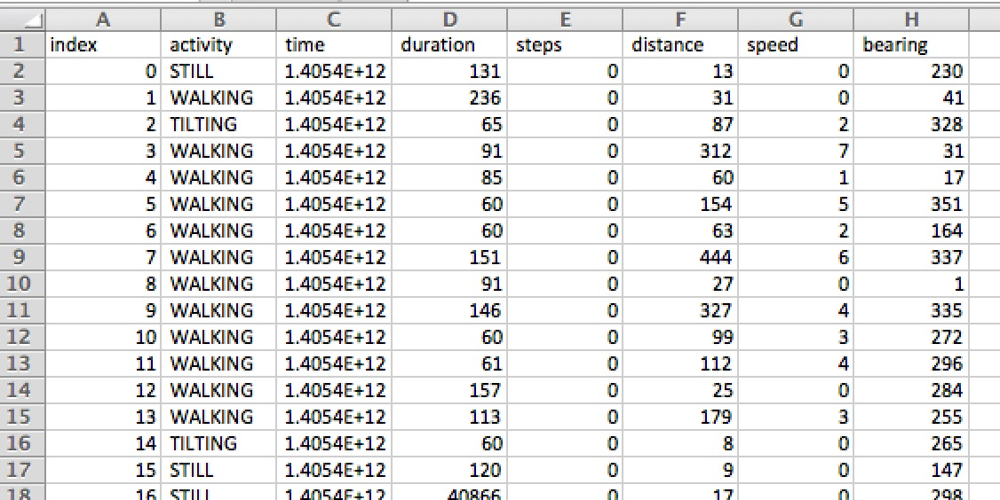

The data provided describes the anonymised traces of 250 days of activity recongised by an activity sensor.
This type of sensor recognised WALKING, RUNNING, IN_VEHICLE, ON_BYCICLE, STILL, UNKNOWN as human activities using an accelerometer.
The data is highly noisy: sometimes activities are misrecognised (e.g. cycling for 20 seconds is unreasonable) and sometimes the GPS either does not work at all (returning no location) or it misbehaves (distance travelled = 4000km)

The data provided includes:
- activity id
- activity
- IN_VEHICLE
- ON_BICYCLE
- ON_FOOT
- STILL
- UNKNOWN
- TILTING
- WALKING
- RUNNING
- Time in msecs from 1.1.1970
- duration in seconds
- number of steps so far in the day
- distance travelled
- speed
- bearing
THE DATA IS PROPERTY OF THE UNIVERSITY OF SHEFFIELD
Although the data is anonymised, still it concerns personal details of people's activities and therefore it is deemed confidential.
The data is distributed for the only purpose of allowing experiments and tests during the
HackSheffield event.
Therefore
only participants in the event above are allowed to download the data.
Moreover anybody downloading the data is required to:
- to keep the data confidential
- to destroy any copy after the end of the Hack Sheffield event
- not to distribute it in any form to other parties
- to process and manage the data only for the purpose of the event above
- not to try to track or trace or identify any person who has provided the data or their location
By downloading the data you agree to the conditions above.
I agree: give me the data